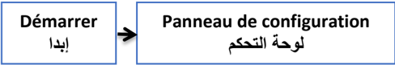
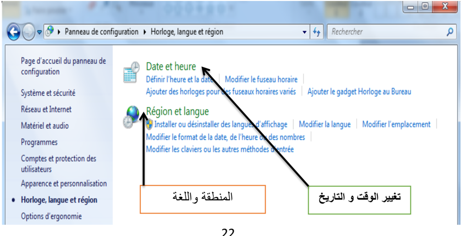
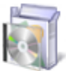
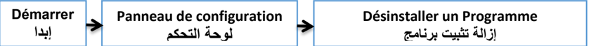
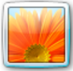

لوحة التحكم برنامج مثبت مع نظام التشغيل ذو واجهة بيانية، يعتبر مركز إعدادات الحاسوب بحيث يسمح للمستخدمين بعرض وضبط الإعدادات الأساسية، مثل: إضافة وإزالة البرامج، والتحكم في حسابات المستخدمين، التاريخ والوقت وخصائص العرض وغيرها.


لوحة التحكم
تغيير شكل المؤشر
التبديل بين الأزرار الأساسية والثانوية
سرعة النقر المزدوج
للدخول إلى خصائص الخيارات الإقليمية واللغة ننفذ ما يلي:
Panneau de configuration لوحة التحكم
Horloge, langue et région: الساعة واللغة والمنطقة
يظهر الإطار التالي:

Démarrer إبدأ
في هذه النافذة يمكن تغيير ما يلي:
في هذه الخاصية يمكن التغيير والتحكم فيما يلي:
في هذه الخاصية يمكن التغيير والتحكم فيما يلي:


هي عملية تتيحها لوحة التحكم للتخلص نهائيا من البرامج غير المرغوب فيها أو التي لا تعمل بطريقة سليمة والتي تم تثبيتها من قبل.
لتنفيذ هذه الخاصية نتبع ما يلي:


لحذف برنامج ننقر فوقه بالزر الأيمن للفأرة فتظهر القائمة (Désinstaller/Modifier) ثم نتبع المراحل المقترحة.

حساب المستخدم يعرف على أنه مجموعة الإجراءات التي يمكن لمستخدم ما تنفيذها على حاسوب مستقل أو على كمبيوتر عضو في مجموعة عمل، يوفر الحساب لكل مستخدم برامجه، ملفاته، مجلداته وواجهته الخاصة به في التعامل مع نفس الجهاز.

حساب مسؤول الكمبيوتر Administrateur
حساب المسؤول يكون خاصا بمالك الحاسوب بحيث يعطيه قدرة غير محدودة في إجراء تغييرات وتعديلات على النظام، وتثبيت البرامج، والوصول إلى كل الملفات والمجلدات المخزنة في حاسوبه، ويمكنه كذلك التحكم في حسابات المستخدمين الآخرين بـ:

الحساب المحدود: فيه محدودية تغيير إعدادات الحاسوب ومنع من حذف الملفات الهامة، يمنح عادة هذا النوع لقليلي الخبرة ولغير المخولين بتغيير الإعدادات. يمكن إنشاء حسابات من هذا النوع في البيت للأطفال أو داخل مخبر الإعلام الآلي للتلاميذ، كما لمالك هذا الحساب الحق في:
هو حساب مخصص لمستعمل لا يملك حسابا على الحاسوب بحيث يتيح له تشغيله كما لو أنه يملك حسابا محدودا، وهو غير محمي بكلمة مرور ويسهل تسجيل الدخول لتصفح الإنترنت ومعاينة البريد الإلكتروني، وكتابة مستندات وطباعتها، وتنفيذ بعض النشاطات المشابهة.
لإنشاء حساب جديد نتبع ما يلي: